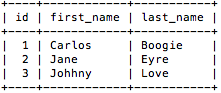
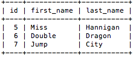

Limit, Updating & Deleting - MySQL Relational Database
Using Limit, Updating & Deleting Data
In this section we are going to focus on limiting the amount of information a query can generate, updating existing data to store new values and deleting existing data which is no long necessary.
Limit
This section will be relatively short but important to remember especially when you have an exceptionally large database like ebay, amazon or AT&T. There are times when you want to query data, yet we want the amount of information contained to a certain number of records or maybe we just want to select the most recently inserted records.
Code:
SELECT id, first_name, last_name FROM Login LIMIT 3;

Above we see that the first name, last name and id are selected from table Login with a limit of 3. Our query returned a total of 3 results, what if we want to skip the first 4 results and return the next 3. In this sitaution we can set our limit to 4, 3. The first number would set tell our query to move down to the fifth record and then return the next 3 records.
Code:
SELECT id, first_name, last_name FROM Login LIMIT 4, 3;

Updating Data
Moving on to updating data, the purpose of updating data is to edit data that already exists without having to drop and re-insert the record. We can change either one or all of the fields for the selected record. In our next example I will update the email from a selected user.
Code:
SELECT id, first_name, last_name, email FROM Login WHERE id = '1';
UPDATE Login SET email='Jc@hotmess.com' WHERE id = '1';
SELECT id, first_name, last_name, email FROM Login WHERE id = '1'
So we selected the record with a user id equal to one, then we updated the email field equal to a different value and selected the same record to see the changes. Just be sure to be careful when updating fields like primary key or passwords as sensitive information can become forgotten or lost.
Deleting Data
Deleting data should be handled with the same care as updating it. Select the desired field first before deleting it to ensure you have the right record. For our next example we are going to delete the record we just updated, with the user id equal to one.
Code:
SELECT id, first_name, last_name, email FROM Login;
DELETE FROM Login WHERE id = '1';
SELECT id, first_name, last_name, email FROM Login;
SELECT id, first_name, last_name, email FROM Login WHERE id='1';


Upon trying to query the record based on the user id, our database returns an empty set. Of course we can just use our INSERT INTO function to put back the same record if we want to. However, this is good function for getting rid of data which we no longer require in our database.
Previous Page Next Page